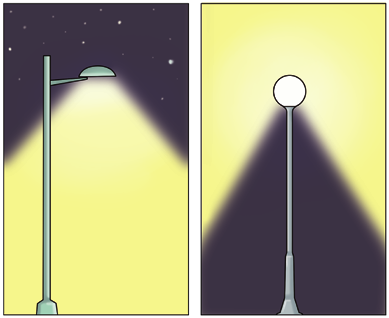

Analiza los puntos de fusión y ebullición de estas sustancias cuyas moléculas son similares a la molécula de agua.
Gráfico de puntos de fusión y ebullición
a. ¿Qué punto de fusión y de ebullición debería tener el agua según las características de los átomos de su molécula?
b. ¿En qué estado de agregación debería estar el agua en la Tierra si estos valores fuesen extrapolados en la gráfica?
¿Cuáles son los elementos químicos que forman la molécula de agua? ¿En qué proporción se encuentran?
¿Qué significa que el agua tiene elevada capacidad calorífica? ¿Cuál es la utilidad de esta propiedad para los seres vivos?
¿Por qué los inviernos son más suaves en las zonas costeras de la península que en la meseta central? ¿Crees que el cambio climático está alterando esta tendencia? Busca y contrasta información antes de dar tu respuesta.
En el siguiente gráfico se relaciona la temperatura del aire con la altura. Analiza el gráfico y responde a las preguntas.
Relación entre temperatura del aire y altura
a. ¿Cuáles son los valores de la temperatura de la atmósfera a 0 km, 12 km, 50 km y 80 km de altura?
b. ¿Qué relación hay entre estas alturas y los límites de las capas de la atmósfera? Investiga, citando las fuentes consultadas.
c. ¿Qué indica la franja azul? ¿Qué significa para los seres vivos?
d. La temperatura disminuye hasta los 12 km, y a partir de esa altura, aumenta lentamente para, después, elevarse con rapidez hasta los 50 km de altura. ¿A qué se debe este cambio?
¿Qué tipo de radiación es más peligrosa para los seres vivos, la infrarroja o la ultravioleta? ¿Por qué?
Investiga y elabora un informe sobre qué es la magnetosfera y su importancia para los seres vivos. Cita las fuentes consultadas.
Explica por qué es primordial el ozono estratosférico para los seres vivos.
Relaciona cada uno de los siguientes fenómenos naturales con las capas de la atmósfera en las que se pueden observar: lluvia, estrella fugaz, aurora boreal, viento y arco iris.
¿Qué es el efecto invernadero de la atmósfera? ¿Cuál sería el aspecto de la superficie de la Tierra si no se diese este fenómeno?
El albedo terrestre es el porcentaje de radiación incidente que refleja la Tierra. Su valor es variable. Señala qué factores pueden influir en la variación del albedo.
¿Por qué es importante el oxígeno atmosférico para los seres vivos? ¿Y el dióxido de carbono?
¿Constituye una fuente de contaminación atmosférica la emisión de gases a la atmósfera por un volcán? Justifica tu respuesta.
El 70 % de la población está expuesta a niveles de ruido que pueden ocasionar graves trastornos en la salud de los seres humanos y elabora una infografía que incluya tus propias conclusiones sobre el tema. Cita las fuentes consultadas.
Observa la imagen, que muestra dos modelos de farolas de uso habitual en las calles de las ciudades, y contesta las cuestiones.

Farolas en la ciudad
a. ¿Cuál generará más contaminación lumínica? ¿Por qué?
b. ¿Cuál crees que es la menos eficiente?
c. ¿Qué modificaciones mejorarían su eficiencia?
d. ¿Qué consecuencias tiene para los seres vivos el uso de farolas que producen contaminación lumínica?